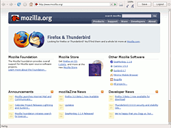
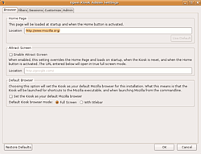

Surfstation
Archivierte Anleitung
Dieser Artikel wurde archiviert, da er - oder Teile daraus - nur noch unter einer älteren Ubuntu-Version nutzbar ist. Diese Anleitung wird vom Wiki-Team weder auf Richtigkeit überprüft noch anderweitig gepflegt. Zusätzlich wurde der Artikel für weitere Änderungen gesperrt.
Anmerkung: Die hier beschriebene Erweiterung funktioniert nur bis Firefox 3.0. Eine Testinstallation unter Firefox 3.6 oder höher schlug fehl! Eine Alternative, die jedoch nicht den gleichen Funktionsumfang erreicht, ist R-kiosk  .
.
Zum Verständnis dieses Artikels sind folgende Seiten hilfreich:
Dies ist eine Anleitung zur Erstellung einer Surfstation (Kioskbrowser/Surfterminal) mit dem Firefox 3.0 und dem GNOME-Desktop, falls der Rechner öffentlich zugänglich ist bzw. absichtlich beschränkt werden soll, wie etwa in einem Internetcafé oder bei einer Party.
Einrichtung¶
Benutzer anlegen¶
Für den Kioskmode wird ein eigener Benutzer ohne spezifische Rechte angelegt. Die Einrichtung ist im Artikel Benutzer und Gruppen erklärt. In diesem Artikel wird also ein unprivilegierter Benutzer "kiosk" mit dem Homeverzeichnis /home/kiosk verwendet. Der große Vorteil ist, dass das System als normales Desktopsystem von allen anderen Benutzern weiterhin genutzt werden kann.
Nach dem Anlegen loggt man sich nun mit dem neuen Benutzer am Displaymanager ein.
Firefox¶
Erweiterung installieren¶
 Firefox 3.0 eignet sich durch seine Flexibilität und Erweiterbarkeit sehr gut für dieses Vorhaben. Aus diesem Grund wurde für das New Yorker Brooklyn Museum eine Lösung mit genau diesem Ansatz entwickelt. Das Resultat ist die Erweiterung "Open Kiosk".
Diese lädt man sich nun von der Entwicklerseite herunter und installiert sie. Es werden die Erweiterungen jslib production build und Firefox Open Kiosk benötigt. Bitte auch in dieser Reihenfolge installieren.
Die Erweiterungen sind beim nächsten Programmaufruf einsatzbereit.
Administration¶
Der Browser kann nun von einem Terminal [3] mit
firefox -kiosk
im Kiosk-Modus gestartet werden. Man sieht, dass wirklich nur grundlegende Browserfunktionen bereitgestellt werden. Es gibt kein Menü, Kontextmenü, man kann keine Dateien herunterladen usw.
Oben rechts befindet sich ein "Logout"-Button. Der setzt die Sitzung zurück, löscht den Cache, besuchte Seiten, Cookies usw. Standardmäßig wird dies ebenfalls nach einer Minute Inaktivität getan, eine Einstellungsmöglichkeit findet man im Administrationstool
Das Administrationstool ruft man auf mit
firefox -kiosk admin

Das Standardpasswort ist "admin". Dies lässt sich im letzten Reiter "Admin" ändern.
Hier lassen sich nun die allgemeinen Einstellungen tätigen.
Unter "Filters" hat man die Möglichkeit, eigene Filter für Content und JavaScript zu definieren. Die Filter werden in Dateien verwaltet, Beispiele werden jeweils unter "View Sample" angezeigt.
Im Reiter "Customize" lassen sich die Symbole in der Navigationsleiste ein-/ausblenden bzw. die Leiste komplett entfernen. Es empfiehlt sich hier, den Druck- und Speicherbutton zu deaktivieren.
Automatischer Start¶
Ist der Browser fertig eingerichtet, muss man nur noch den automatischen Start einrichten.
Man erstellt nun mit einem Editor [4] folgendes Skript, speichert es unter einem beliebigen Namen ab und macht es ausführbar [6]. Es bewirkt, dass der Firefox 3.0 gestartet und automatisch neu startet, falls der Browser beendet wird. Firefox 3.0 kann seitens des Users nicht beendet werden, allerdings kann es natürlich softwareseitig zu Programmabstürzen kommen.
#!/bin/sh while true do firefox -kiosk done exit 0
Für den Fall, dass man im Administrationstool im Reiter "Browser" die Option "Set the Kiosk as your default Mozilla browser" aktiviert hat, ist das Programm auch einfach nur mit
firefox
zu starten.
Anschließend richtet man für dieses Skript den automatischen Start [5] ein. Bei der Gelegenheit kann man natürlich auch alle nicht benötigten Dienste deaktivieren. Wenn man dieses Skript direkt aus der Datei /home/kiosk/.profile starten lässt, erübrigt sich die weitere Absicherung des Desktops. Denn dann wird ausschließlich der Firefox gestartet und der Desktop (Tastaturbefehle) ist inaktiv.
GNOME¶
Panel aufräumen¶
Nach der Einrichtung des Browsers ist es nun wichtig, GNOME abzusichern. Als erstes werden die bestehenden Panels bearbeitet. Informationen zur Handhabung mit Panels gibt es im Artikel zum GNOME-Panel.
Ubuntu 8.04¶
Das obere Panel wird gelöscht. Das untere bzw. einzige Panel kann man nicht löschen, also werden alle Applets entfernt.
ab Ubuntu 8.10¶
Im Konfigurationseditor entfernt man im Schlüssel "/desktop/gnome/session/required_components_list" den Wert panel, damit die Panels nicht mehr angezeigt werden.
Abdichten¶
Um zu verhindern, dass auf dem Desktop per Rechtsklick das Kontextmenü von Nautilus erscheint, deaktiviert man im Konfigurationseditor den Schlüssel "/apps/nautilus/preferences/show_desktop".
Ein Programm, das eine starke Einschränkung des Benutzers erlaubt, ist Pessulus. Es wird über das Paket
pessulus
installiert [1] und kann dann mit dem Befehl
pessulus
gestartet werden. Wichtig sind hier die Optionen:
"Allgemein -> Kommandozeile deaktivieren": verhindert, dass mit Alt + F2 Programme gestartet werden können oder auf eine virtuelle Konsole gewechselt werden kann (dies ist ohne Kenntnisse jeglicher Passworte allerdings nur kosmetischer Natur)
"Panel -> Das Panel sperren"
GNOME wäre damit entsprechend präpariert.
Tastenkombinationen entfernen¶
Um zu verhindern, dass z.B. mit Strg + Alt + Entf der Benutzer abgemeldet wird oder andere Tastenkombinationen genutzt werden, kann man diese in den Einstellungen löschen. In Verbindung mit einer automatischen Anmeldung ist es aber ganz hilfreich, eine selbst erstellte Tastenkombination für die Benutzerumschaltung zu behalten.
Anmeldung automatisieren¶
Der Displaymanager wird nun so eingerichtet, dass der Kiosk-Modus automatisch gestartet wird und keine Passworteingabe erforderlich ist, sowohl bei Systemstart als auch für den Fall des Neustarts des XServers. Wie man dies vornimmt, ist den Artikeln zu Displaymanagern, bei der Benutzung von GNOME also meist GDM, zu entnehmen.
System absichern¶
Das System selbst muss so abgesichert sein, dass auch bei einem Neustart unautorisierte Personen keine Möglichkeit haben, den Boot-Prozess zu beeinflussen und zum Beispiel den Recovery-Modus starten können. Desweiteren müssen jegliche Risiken vermieden werden, wenn physikalischer Zugang zum System besteht. Mit dieser Problematik beschäftigt sich der Artikel Lokale Sicherheit.
Konfiguration ändern¶
Der Kiosk-Modus ist nun soweit abgeriegelt, dass man keine Möglichkeit hat, irgendetwas zu starten. Aus diesem Grund hat man keine andere Möglichkeit, als die Konfiguration von einem anderen Benutzer aus zu steuern. Unter Ubuntu existiert mindestens ein weiterer Benutzer (der bei der Installation angelegt wurde); es eignet sich jedoch auch jeder andere Desktop-Nutzer des Systems.
Man meldet also einen der Desktop-Nutzer an und öffnet ein Terminal.
Um Programme, die den XServer nutzen, auf dem Desktop eines anderen Benutzers ausführen zu können, muss man dies zunächst explizit erlauben. Dies geschieht mit
xhost +local:kiosk
Diese Einstellung bleibt erhalten, bis sich der Benutzer abmeldet.
Jetzt meldet man sich als "kiosk" an:
su kiosk
Nun kann man innerhalb dieses Terminals als Benutzer "kiosk" agieren, also auch Programme wie das Administrationstool der Open Kiosk-Erweiterung oder die für die Konfiguration von GNOME genutzten Tools.
Links¶
Intern¶
Firefox
 Übersichtsartikel
ÜbersichtsartikelArchiv/OpenKiosk - Eine professionelle Lösung mit Kontenverwaltung für Internetcafés
Web¶
Client Profile - Brooklyn Museum
- Informationen zur Open Kiosk-Erweiterung für das Brooklyn Museum Open Kiosk: Firefox 2 Version Now Available
- Brooklyn Museum-Blogeintrag Pessulus
- A lockdown editor for GNOME
- Erstellt mit Inyoka
-
 2004 – 2017 ubuntuusers.de • Einige Rechte vorbehalten
2004 – 2017 ubuntuusers.de • Einige Rechte vorbehalten
Lizenz • Kontakt • Datenschutz • Impressum • Serverstatus -
Serverhousing gespendet von